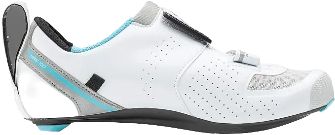
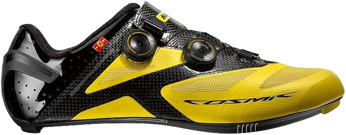

8 Best Shimano Triathlon Shoes 2024
Shoes are essential for everyone, and when it comes to cycling, Shimano Triathlon Shoes stand out as some of the best. These shoes are designed for physical activities, providing exceptional comfort for those engaging in various exercises. Their performance capabilities make them a favorite among cyclists, showcasing how much people appreciate the quality and support these shoes offer.
Ideal for road cycling, Shimano Triathlon Shoes deliver excellent comfort and are specifically crafted for triathlons and racing. They cater to individuals aiming for high performance, allowing them to compete effectively while enjoying a great riding experience.
-
#1
Fiziktransiroinfinito R1 knit
These shoes offer impressive features and benefits, designed to keep your feet protected and comfortable. They are available in a variety of colors and a wide range of sizes, ensuring you find the perfect fit for your needs. With these shoes, you can experience exceptional comfort and accessibility, making them an essential choice for anyone looking to enhance their footwear collection.
Not only do these shoes support your fitness journey, but they also come packed with abilities that promote overall well-being. Their lightweight design makes them ideal for long-distance wear, allowing you to enjoy your activities without feeling weighed down. These shoes are crafted to deliver a great balance of comfort and performance, making them a top choice for fitness enthusiasts.
Specifically designed for comfort during long races, these shoes provide the necessary flexibility and support. They feature elements that enhance comfort and control, ensuring a smooth ride. You can even wear them without socks, making them versatile for different preferences and conditions. -
#2
Specialized S- works Trivent
When discussing specialized shoes for swimming and racing, it's clear that these options provide excellent comfort and performance. Designed for durability and breathability, they offer the flexibility needed to enhance your results.
Available in a wide range of sizes and colors, these shoes ensure you have access to high-quality materials that promote both health and comfort. They combine a stylish look with superior functionality, allowing for natural movement and support for your feet. With their robust construction, they effectively protect the heel while delivering exceptional durability and flexibility, enabling you to perform at your best.
These shoes excel at keeping your feet dry, ensuring a comfortable cycling experience with improved speed. They include additional support features that enhance durability and flexibility, making them ideal for the challenges faced during cycling. With these shoes, you can achieve great success in your athletic endeavors. -
#3
Pearl izumi tri fly pro v3
Shoes play a crucial role in enhancing fitness activities, offering features designed for optimal comfort. Many people enjoy cycling and seek adventure during these activities, which is why it's important to have shoes that provide a wide range of abilities and features for maximum comfort.
For cycling and swimming, these shoes come in various colors and designs, ensuring your feet stay dry and allowing for quicker movement, ultimately supporting your fitness goals.
Once you slip into these shoes, comfort is guaranteed due to their thoughtful design and range of features aimed at providing an exceptional experience. Additionally, their breathability ensures that perspiration is effectively managed, keeping your feet dry and enabling faster, more efficient movement. -
#4
Pearl izumi tri fly elite v6
When it comes to cycling shoes, comfort is paramount, and these options excel in providing a wide range of features tailored for your needs. They are designed to deliver durability and breathability, ensuring you achieve optimal performance while enjoying all the benefits they offer.
These shoes are not only excellent for cycling but also feature a lightweight design that enhances visibility during foggy conditions. Their versatility allows you to wear them for various activities, making them a practical choice for any occasion.
Meticulously designed, these shoes prioritize your comfort with innovative features that allow your feet to move freely. They effectively wick away moisture, keeping you dry during rides. With a perfect fit and adjustable elements, you can customize the comfort level to suit your preferences and enjoy every moment on your bike. -
#5
Sidi T-5 air carbon
These shoes are designed to offer exceptional durability and flexibility, ensuring you achieve great results while boosting your confidence. With a variety of colors and a focus on breathability, they combine quality and affordability, making them an excellent choice for anyone in search of reliable footwear.
Whether you enjoy hiking, fishing, or cycling, these shoes are built to withstand the demands of outdoor activities. Their robust construction ensures you get the comfort and support you need, helping to prevent injuries during your adventures.
Offering outstanding comfort, these shoes keep your feet dry and protected even in hot conditions. They're versatile enough for any occasion, ensuring you can rely on them for all your activities. If you're looking for high-quality yet budget-friendly shoes, this pair is perfect for you, featuring materials that you'll appreciate from the moment you wear them. -
#6
Fiziktransiroinfinito r3
These shoes offer an impressive range of quality and are designed to provide the comfort you seek, complete with a robust warranty to ensure you encounter no issues while wearing them. They excel in durability and flexibility, showcasing a style that helps alleviate any discomfort experienced during cycling. We understand the passion many have for cycling, which is why we present these shoes as an ideal choice, perfect for various needs.
Not only do these shoes provide excellent protection for your feet, but they also offer full support, promoting a healthy lifestyle while ensuring a safe cycling experience. With a wide selection of comfort, colors, and designs available, these shoes represent an outstanding value. They feature remarkable qualities and capabilities, making them the perfect pair for your cycling adventures.
In summary, these shoes are designed to empower you with the style and comfort you desire while offering the durability needed for cycling. With their exceptional features and thoughtful design, they stand out as an excellent choice for anyone looking to enhance their cycling experience. -
#7
Lg X- lite II Triathlon
These shoes we're discussing offer exceptional features and benefits, ensuring you have the best accessibility and excellent slip resistance, allowing you to cycle without any issues or mishaps.
Designed with a variety of capabilities, these shoes promote breathability, keeping your feet safe from perspiration and demonstrating their effectiveness in delivering great results. By choosing these shoes, you’ll discover their strong presence in the market, showing just how much they care for your feet.
These shoes excel in multiple aspects, providing full support while keeping the good elements close and pushing away the negatives. With a fantastic range of colors available, they cater to individual preferences, making it easy to find the perfect fit for your style. Moreover, these shoes protect your feet from water and potential injuries that may occur during cycling. -
#8
Mavic cosmic ultimate
These shoes offer exceptional durability and flexibility, creating a combination that ensures everyone achieves great results. With a robust support system, these shoes enhance comfort over time, making them ideal for long racing events. It’s clear that many people are passionate about their pursuits, and these shoes cater to that enthusiasm.
Designed for anyone looking to engage in physical activities for health benefits, these shoes provide a wide variety of colors and designs. This range ensures you find something that not only looks good but also supports your comfort and effectiveness in maintaining a healthy lifestyle.
Featuring breathable materials, these shoes represent a valuable choice that also helps you save money. Available at reasonable prices, they make it easy for you to invest in quality footwear without breaking the bank.